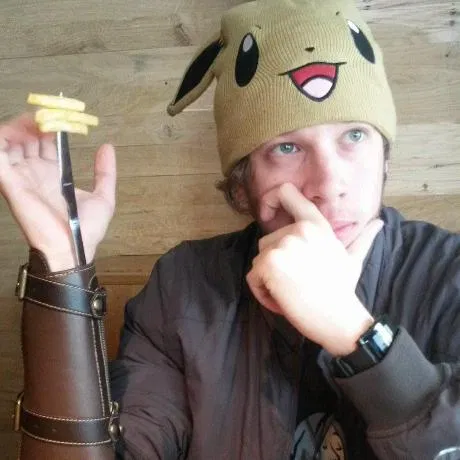
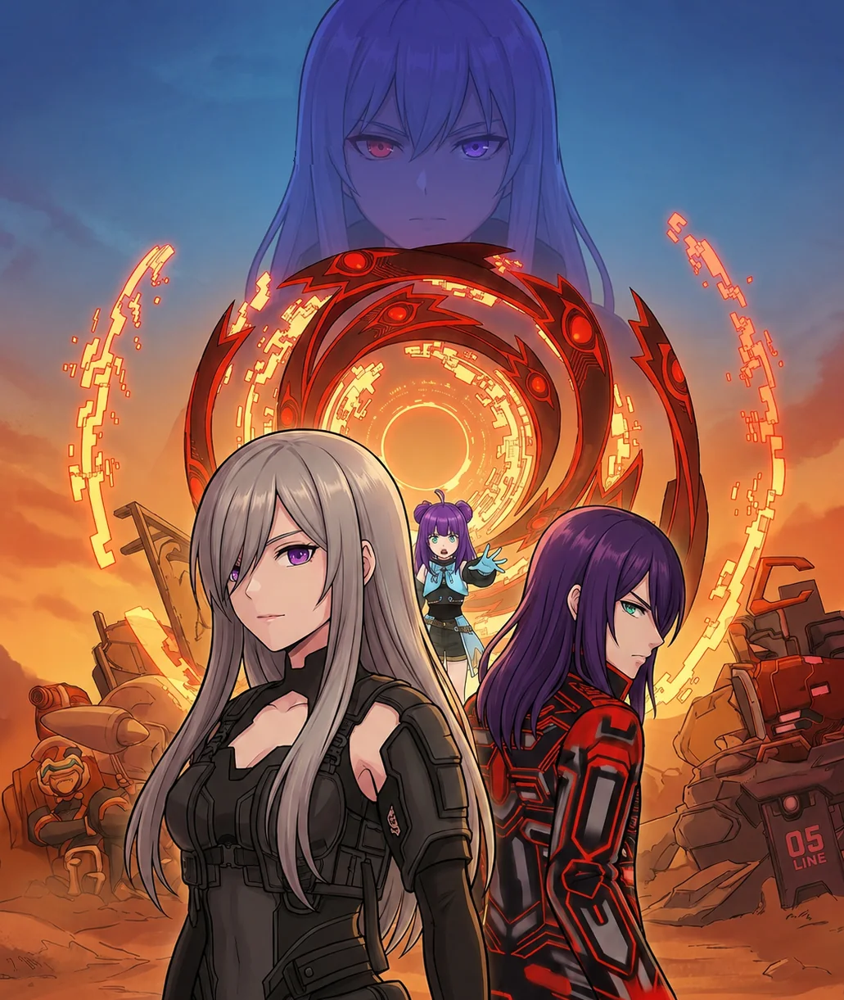

PhD, Cybernetics and Reality Engineering (CARE) Lab
Nara Institute of Science and Technology
Oct 2024 – Sep 2027 (expected)
Research theme: therapeutic applications of location-based games on hikikomori resocialization.

Unity Developer & XR Software Engineer
Experienced in gameplay systems, UI programming and AR/VR applications, primarily using Unity. PhD candidate at the Nara Institute of Science and Technology, researching therapeutic applications of video games.
Computer engineer specializing in Unity, game systems development and XR development.
I am a PhD candidate at the Nara Institute of Science and Technology (NAIST), where I am part of the CARE Lab, a research group that studies the therapeutic applications of video games. My research examines how video games can support the resocialization of people at risk of social isolation, and I am developing my own mobile game in Unity to test our current hypotheses. I am also currently a Unity XR engineer intern at Premium Arts Inc, where I work on AR/VR applications.
I completed my Master's degree in the same laboratory in 2024. Before that, I finished my Bacherlor's in Computer and Information Engineering at the Federal University of Rio de Janeiro. I also worked on VR education software, maritime simulation and enterprise systems in Brazil.
Roles in game development, XR, simulation and enterprise software, most recent first.
Graduate research at the Nara Institute of Science and Technology and a bachelor's degree in computer engineering.
Nara Institute of Science and Technology
Oct 2024 – Sep 2027 (expected)
Research theme: therapeutic applications of location-based games on hikikomori resocialization.
Nara Institute of Science and Technology
Oct 2022 – Sep 2024
Master's thesisTherapeutic Applications of Video Games on Hikikomori Resocialization
Preceded by a research student period, Apr – Sep 2022.
Federal University of Rio de Janeiro
Mar 2012 – May 2019
Year abroad at Goldsmiths, University of London, 2015–2016.
Final projectTelepathy-Controlled Chassis
Selected game and XR work, from research prototypes to VR software.
An original story-driven location-based mobile game currently being developed in Unity for my doctoral research project.
A full-scale location-based game with RPG and enemy capture systems, designed to explore the relationship between gameplay preferences and social isolation risk.
Location-Based gameplay was integrated with the MapBox API and displays Points of Interest using collected geocoordinates of landmarks around Japan. The combat and RPG systems were implemented from scratch in C#.
Each character embodies a distinct philosophy and view of life personal freedom and happiness, and the narrative is structured around their choices and consequences to resonate with the target audience.

A VR anatomy laboratory with more than 3,000 scientifically validated structures of the male and female body.
In 2021 I worked on the development of this application as a Senior Unity Developer: with my team, I migrated the system from the beginning, from Unreal Engine to Unity, data-binding between 3D models and UI panels, and implementing a reusable spatial UI framework.
A browser-based virtual keyboard I developed recently on my free time. Driven entirely by eye movement and built on WebGazer.js for webcam-based gaze tracking. Looking at a key for a short dwell time selects it, so the whole interface can be typed on hands-free.
Try the demo View repoTechnologies used in production, research and simulation work.
Peer-reviewed publications on gameplay preferences and social isolation risk, and related media coverage.
I am interested in game development and XR positions. For inquiries about roles or collaboration, please contact me by email.